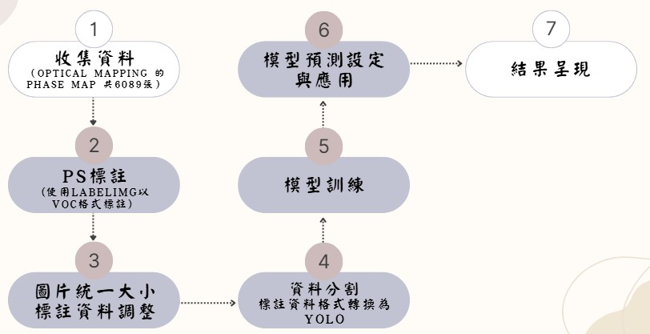
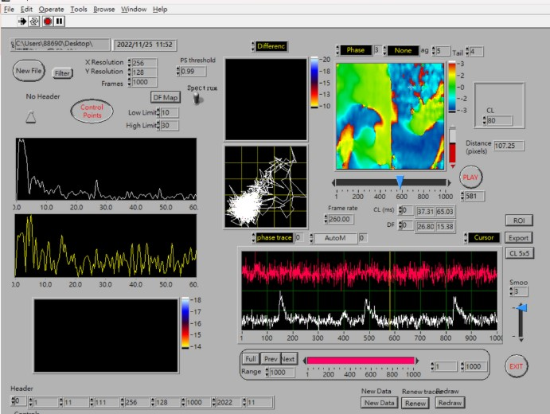
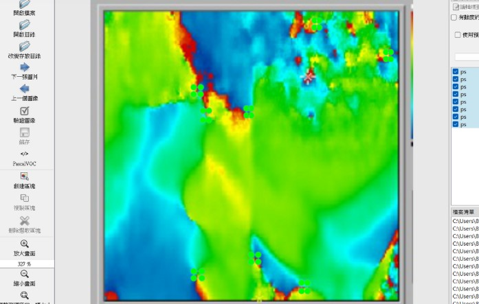

研究進行流程
資料來源
●Optical Mapping（光學映射） 是一種利用光學技術記錄和分析生物組織（尤其是心臟組織）電活動或其他動態現象的技術。 ●應用於心臟研究:在心律失常研究中，光學映射能記錄心肌細胞的動作 電位傳導和再極化過程，幫助識別和定位心律不整的發生點及傳導異常。 ● 技術特點: 染料標記：使用電壓敏感染料標記心肌細胞膜的電位變化。 光學記錄：利用高速相機捕捉心臟表面的電活動變化。
收集資料
Optical Mapping - Phase Map 呈現平台 PS標註
| ||